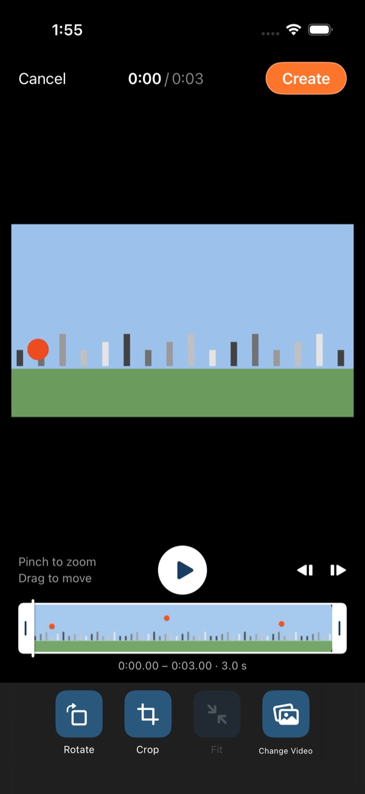
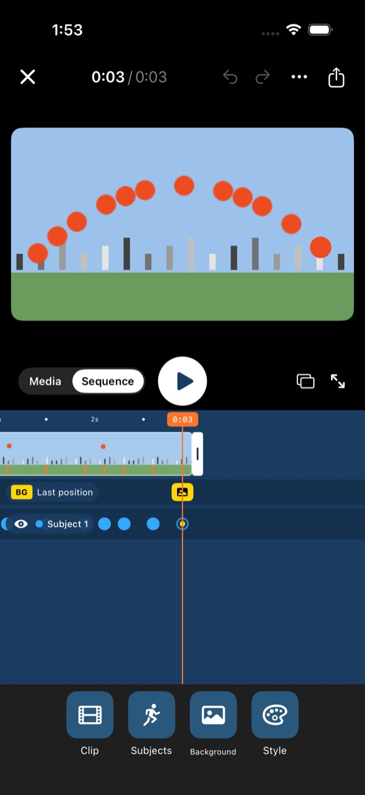
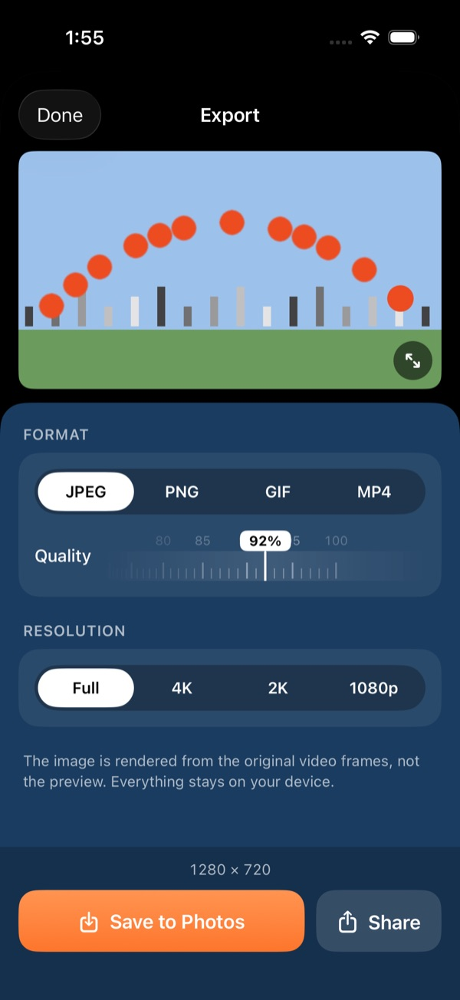
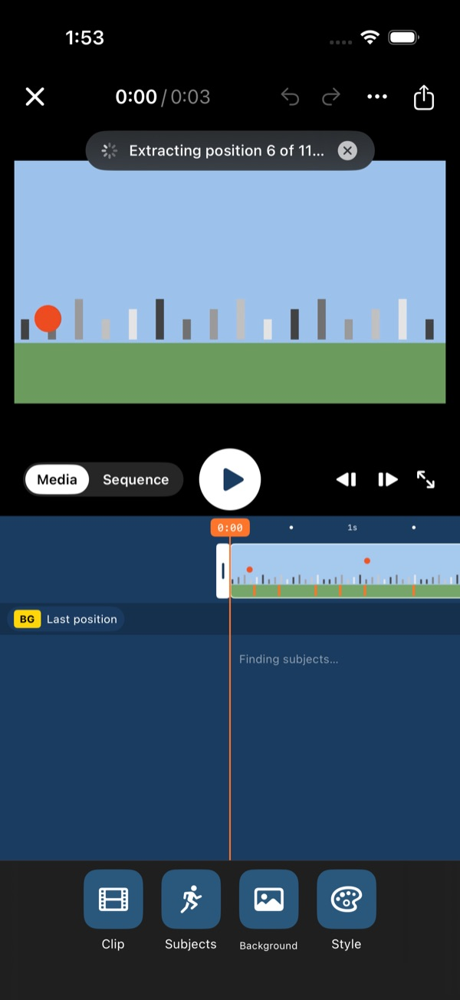
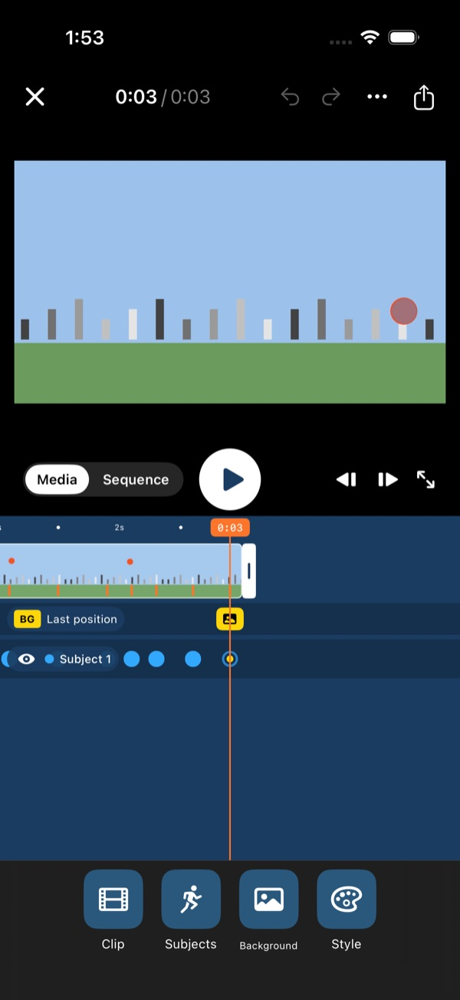
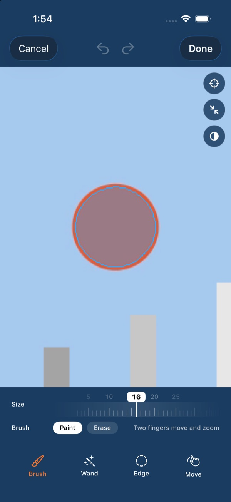
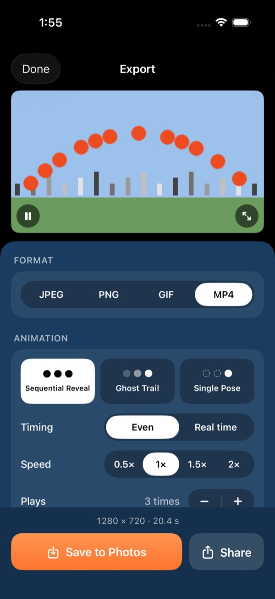
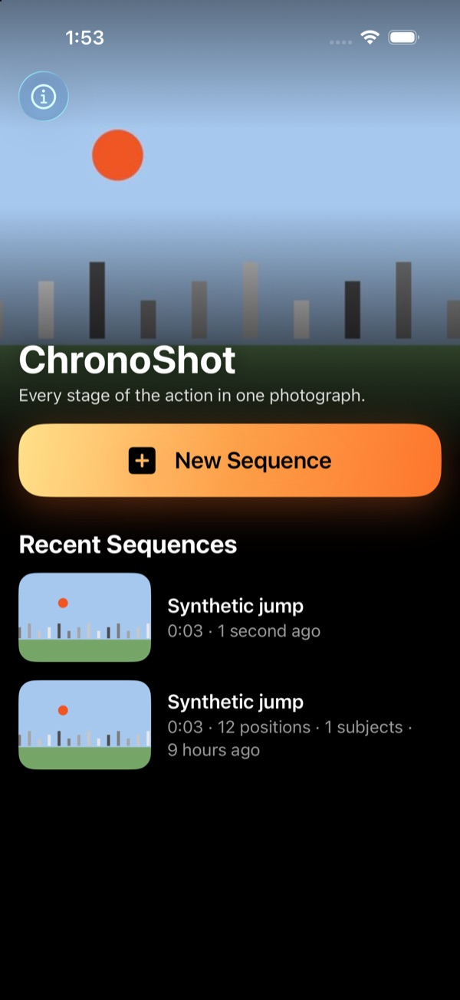

Every stage of the action in one photograph
ChronoShot turns a short sports video into a chronophotograph: one picture that shows the athlete at several moments of the move, all on the same background. This guide covers choosing a clip, the import review, every menu in the editor, and export.



Screenshots use a generated sample clip (an orange ball jumping across a field) so the menus are easy to see. With a real clip, the ball is your athlete.
What ChronoShot does
A chronophotograph freezes a movement at several moments and lays those moments side by side in one image: a high jumper rising, clearing the bar and landing; a skateboarder's whole trick; a long-jump run-up and flight.
ChronoShot builds that picture from an ordinary video:
- It finds the moments worth showing. These are called positions.
- It finds the athlete at each position. A person or object it follows is a subject.
- It cuts the subject out at each position and pastes every cut-out onto one clean background.
You can then adjust any of these steps, style the result, and export it as a photo, a GIF or a video.
All the work happens on your iPhone. Nothing is uploaded.
How it works
When you open a new sequence, ChronoShot prepares it on its own. A progress capsule over the preview shows each stage, and you can cancel it.
Each stage is editable from the menus:
- Change the positions in Clip → Positions.
- Fix a subject with Refine and Re-identify.
- Pick another backdrop in Background.
- Change the look in Style.
The preview updates as you go.
The steps
- Start a new sequenceOn Home, tap New Sequence and pick a video from Photos.
- Trim, crop and createIn the import review, drag the trim handles so the clip holds just the action. Rotate or crop if needed, then tap Create. See The import review.
- Let it prepareThe editor opens and analyses the motion, picks the positions and detects the subjects. A notice says how many subjects it found.
- Check the resultSwitch the preview to Sequence to see the finished picture.
Too crowded or too sparse? Change the count in Clip → Positions.
Wrong person, or a bad cut-out? Tap that pin on the timeline and use Re-identify or Refine. - Choose the backgroundThe last position is the background by default. Pick another in Background, or build a Clean Plate with no one in it.
- Style itIn Style, pick a Look and adjust opacity, spacing, shadow and colour.
- ExportTap the share icon at the top right. Choose JPEG, PNG, GIF or MP4, then Save to Photos or Share.
Every edit is saved as you make it, and Undo / Redo at the top of the editor step back through them. Close the editor at any time; the sequence is waiting on Home.
Choosing a video
The clip you start from matters more than any setting. A good chronophotograph needs two things:
- The athlete moves across the picture, so the positions don't pile on top of each other.
- The background stays still, so every position can share it.
Good clips
- Camera on a tripod or held very still.
- Movement sideways across the frame: a run-up, a jump, a swing, a trick along a rail.
- The whole action in frame, with some room at the edges.
- One athlete, or a few who stay apart.
- Bright daylight, so each frame is sharp. Slow-motion clips work well.
- The athlete stands out from the background in colour or brightness.
- Short: a few seconds that hold just the move.
Hard clips
- Movement straight toward or away from the camera. Every position lands in the same spot.
- A camera that follows the athlete with big pans or zooms.
- Crowds, teammates or a referee crossing the athlete.
- A moving background: water, trees in wind, spectators, screens.
- Low light or indoor gyms. Motion blur makes soft, smeared cut-outs.
- The athlete cut off at the frame edge for part of the move.
- Long clips with lots of standing around.
Framing tips when you shoot
- Shoot from the side, at right angles to the direction of travel, and far enough back that the whole move fits.
- Hold landscape for horizontal moves (sprints, long jump, skating). Hold portrait for vertical ones (a basketball jump, a pole vault seen from the side).
- Keep the background visible. Every part of the background behind the athlete should be uncovered at some point in the clip. Then ChronoShot can fill it in when it cleans the background.
- Use slow motion or a high frame rate if your phone offers it. More frames means sharper positions to choose from.
- Start recording a moment before the action and stop a moment after. You can trim the extra away in the import review.
A moving camera can work. Background → Align lines each position up with the background. But a still camera always gives the cleanest result.
The import review
Picking a video doesn't create a sequence straight away. The clip first opens in the import review, where you decide exactly what ChronoShot will work on.
Trim strip
Drag the white handles at each end to keep just the action. The readout under the strip shows the kept start, end and length. Drag on the strip itself to scrub through the clip.
Preview
Pinch to zoom and drag to move the picture inside the frame. Use play and the frame-step buttons to find the exact start and end of the move.
Tools
| Rotate | Turns the clip 90° clockwise. Use it for a video that was recorded sideways. |
| Crop | Crops to Original, 1:1, 4:5, 16:9, 9:16 or 3:2. |
| Fit | Undoes any zoom, move or crop. |
| Change Video | Picks a different video without leaving the review. |
Tap Create to make the sequence. If you trimmed, cropped or rotated, ChronoShot first writes a new clip with just what you kept, so analysis only looks at the action. Cancel discards everything. Your original video in Photos is never changed.
Trim tightly. A clip that starts just before the move and ends just after it gives better positions and faster processing than a long clip. Cropping in the review also helps detection: the athlete is bigger in the frame and there is less else to find.
The editor
The editor is one screen, top to bottom:
- the preview,
- the timeline,
- the main menu: Clip, Subjects, Background, Style.
Tapping a main menu entry opens its strip of tools above it. Tapping a tool either acts at once or opens a one-row panel above the strip. Close the strip with ✕ at its left end.


Preview and top bar
| Media / Sequence | Media plays the video itself, with the selected subject's mask tinted over it. Sequence shows the finished chronophotograph. Some tools switch the preview for you: layer edits need Sequence, and tapping a subject needs Media. |
| Play | In Media, plays the clip. In Sequence, plays the positions one after another. |
| ◀︎❙ ❙▶︎ | Steps one frame back or forward (Media only). |
| Before | In Sequence, shows the background alone, without the subjects, for comparison. |
| Full screen | Shows the preview full screen. Tap to show or hide its controls. |
| ✕ | Closes the editor. Everything is already saved. |
| Undo / Redo | Steps back and forward through your edits. |
| ••• | Rename the sequence. Reset Framing undoes the editor's zoom, crop and rotation. Clear Cached Data frees space; it is rebuilt when needed. |
| Share icon | Opens Export. |
Gestures in the preview:
- Sequence: pinch to zoom in and drag to look around. Double-tap zooms in on a point, or back out to fit. Fit appears in the corner whenever you have zoomed.
- Media: pinch and drag change the framing itself, the same as Clip → Zoom.
Timeline
The timeline scrolls under a fixed orange playhead. Drag it sideways to scrub, and pinch it to zoom in time. Its rows, from the top:
| Clip strip | Thumbnails of the clip. Each position is an orange tick. Faint dots are moments the analysis suggested but didn't pick. The white handles at each end trim the clip; the trimmed ends are dimmed. |
| BG track | Shows which frame is the background, with a yellow marker. Drag the marker to another position to use that frame. Its label says how the background is chosen, for example "Last position". |
| Subject rows | One row per subject, with a pin at each position. The header shows the subject's colour, name and an eye to hide or show the whole subject. Press and drag a header to reorder rows: upper rows are drawn in front when two subjects share a position. |
Pins show the state of one subject at one position:
Tap a pin to select it; its tools appear in the strip. Press and hold a pin for a shortcut menu: Refine Mask, Re-identify and Remove Position.
On the background frame the subject is already part of the background picture, so that pin is marked yellow instead of drawn as a cut-out.
Refining a mask
The automatic cut-out is usually close, but it can miss a hand, a ball or a ponytail, or take in a piece of the background. Refine fixes one subject at one position.
It opens zoomed onto the subject at full resolution. Pinch to zoom (up to 16×) and drag with two fingers to move. With one finger you paint or pick, depending on the tool.
| Brush | Paint adds to the cut-out; Erase removes from it. The size stays the same on screen as you zoom, so zoom in for fine edges. |
| Wand | Tap an area to add or remove everything of a similar colour. Tolerance controls how similar; changing it re-runs your last tap. Connected limits the pick to touching pixels. |
| Edge | Shrink or Grow the edge by one pixel. Remove Specks clears small stray bits. Fill Holes fills small gaps inside the subject. Reset to Automatic discards your edits. |
| Move | One finger moves the picture, for when you want to look without painting. |
The buttons at the right:
- Centre frames the subject.
- Fit shows the whole frame.
- View switches between the tinted mask, the cut-out on a checkerboard, and the picture alone.
Undo and redo work inside the editor. Done keeps your edits; Cancel drops them.

Export
Tap the share icon at the top right of the editor. The preview at the top of the sheet shows exactly what you will get, and updates as you change settings. Tap its corner button to see it full screen.

| Format | Best for | Options |
|---|---|---|
| JPEG | Sharing the photo anywhere. | Quality 50–100%. Resolution Full, 4K, 2K or 1080p. |
| PNG | Highest quality, or a cut-out for design work. | Transparent background exports the subjects alone. Same resolutions as JPEG. |
| GIF | A short looping animation for messages. | 480p or 720p, 12 or 24 fps. Loop. Transparent background, with hard edges, because a GIF pixel is either solid or clear. |
| MP4 | Video for social apps and Stories. | 720p, 1080p or Original, 24 or 30 fps. Plays writes the animation 1 or more times into the video. No sound. |
Animation settings (GIF and MP4)
| Sequential Reveal | Positions appear one after another and stay, ending on the full picture. |
| Ghost Trail | The current position is solid; earlier ones fade away behind it. |
| Single Pose | Only the current position shows, like a stop-motion replay. |
| Timing | Even gives each position the same time. Real time spaces them as they happened in the clip. |
| Speed | 0.5×, 1×, 1.5× or 2×. |
| Full sequence at the end | Shows every position together before the animation starts again. Hold final frame sets how long it stays. |
Save to Photos renders and saves. Share renders the file and then opens the share sheet. The line above the buttons shows the output size (and an animation's length).
Exports are rendered from the original video frames at full quality, not from the preview.
Getting the best results
- Start with a good clip. A still camera and side-on movement matter more than anything else. See Choosing a video.
- Trim tightly in the import review. Keep just the move. Crop in if the athlete is small in the frame.
- Get the spacing right with positions, not effects. Change Clip → Positions → Count until the cut-outs just touch or barely overlap. Then use Add Here and Remove to land on the key moments: take-off, peak, landing.
- Pick moments where the athlete is sharp. Step frame by frame in Media. If a position is blurred, remove it and add the frame next to it.
- Check every pin. A red-ringed pin has no cut-out. Use Re-identify and tap the athlete. If the cut-out is missing a limb or the ball, use Refine.
- Choose the background deliberately. If the athlete in the background frame looks out of place, try First, Here or a Clean Plate.
- If the camera moved, Align. Then check each position. Set any that look wrong to Original in the pin's Alignment panel.
- Keep the style subtle. Natural or Sequential with a little Shadow and Feather looks the most like a photograph. Use Progressive opacity or Trail to show direction of travel.
- Use Spacing for crowded moves. If positions overlap heavily, add a little Spacing, and let Expand grow the canvas to fit.
- Compare with Before to see the background on its own and catch any leftover ghost of the athlete.
Troubleshooting
| What you see | What to do |
|---|---|
| "No subject found automatically" | Open Subjects, tap Add, and touch the athlete in the Media preview. Bright, sharp frames work best. |
| The wrong person at one position | Tap that pin, then Re-identify and tap the right person. Or press and hold the pin and choose Re-identify. |
| A teammate shows up as a subject | Select that subject and Delete it, or Hide it. |
| One athlete appears as two subjects | This can happen when the move changes their shape a lot. Hide or delete the extra row, then Add Pin on the main subject where it is missing. |
| Bright outline or a piece of background around the athlete | Refine → Edge → Shrink, or erase with the Brush. Raising Style → Feather also softens it. |
| A double image of the athlete in the background | The background frame still shows the athlete. Choose another frame, or build a Clean Plate. |
| Positions look shifted or stretched | The camera moved. Run Background → Align; set any bad position to Original. |
| Subjects cut off at the edge | Turn on Background → Expand, or reduce Spacing or Size. |
| "Clip changed, re-analyse" | You trimmed the clip after it was analysed. Tap Clip → Analyse. |
| "Video Missing" | The sequence's video can no longer be found. Tap Relink Video and pick the same video again. |
Managing sequences
Home lists your sequences, newest first, with each one's length, number of positions and subjects. Tap one to open it.
- Swipe left on a sequence for Rename and Delete. Delete asks you to confirm. It removes ChronoShot's copy of the video and all edits; your original in Photos is not affected.
- ⓘ at the top left shows the version, privacy details, and links to the privacy policy and help.

Privacy
- All analysis, detection, cut-outs and rendering happen on your iPhone. Your videos, photos and sequences are never uploaded.
- ChronoShot copies the video you pick into its own storage, so your Photos library is never changed.
- Saving to Photos uses add-only access: the app can add the images you export, but cannot see your library.